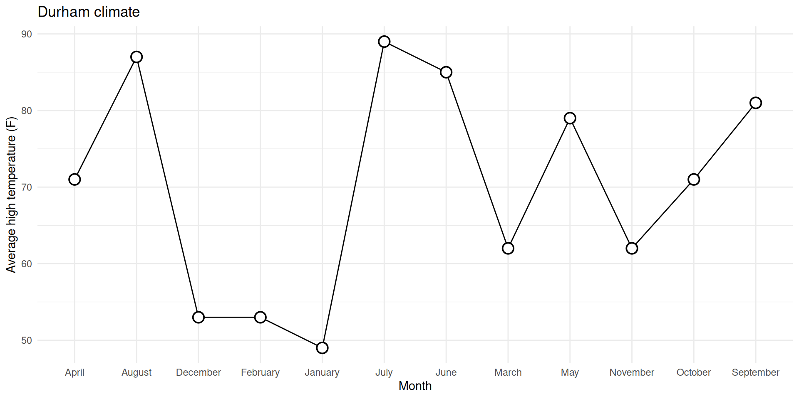
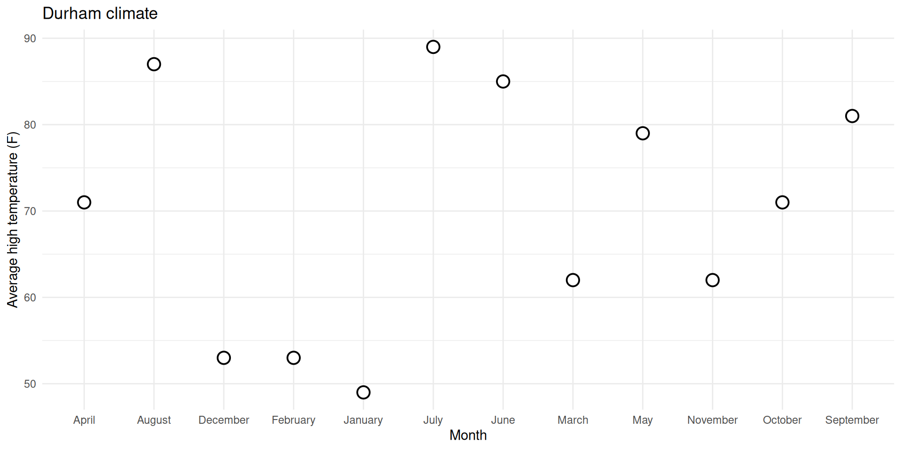
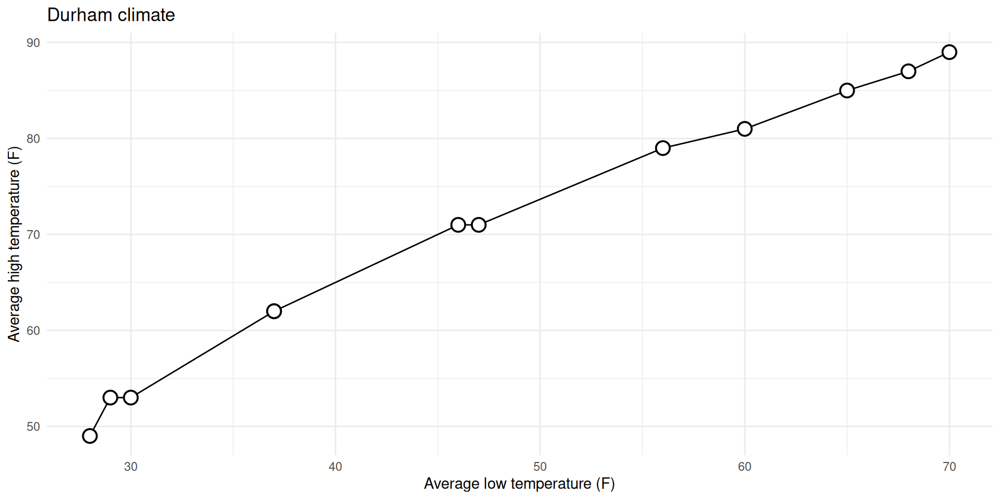
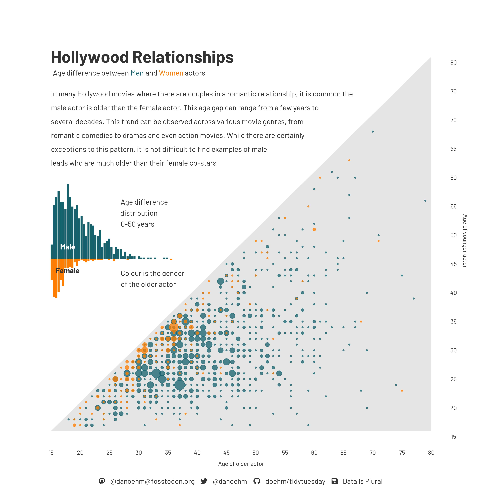

Practice questions for both the multiple choice & live coding portions of the exam will be posted tomorrow!
I will post solutions to the practice questions by Saturday morning
Lab 3 after lecture tomorrow
This will be a shorter than usual lab & is meant to serve as a recap of all we’ve learned so far (aka, helpful exam prep!)
Reminder: Lab 3 will be due by 12:00pm (noon) on Sunday; there will be no late window for this lab assignment
Solutions will posted to the website promptly thereafter
Administrative Details
Project work begins next week! More details on what the project is tomorrow :)
Since the midterm takes place during both of the formal lecture and lab timeslots next Monday, lecture time next Tuesday (9:30am - 10:45am) will function as a lab meeting
Both lab sessions next week (T, Th) will be dedicated worktime
You will receive your team assignments (2 groups of 3, 2 groups of 4) in lab next Tuesday
As a reminder, projects are completed in groups BUT grades are individual; your final project grade may ultimately differ from your teammates’ if there is unequal participation
Participation is measured by 1) lab attendance on project work days; 2) commit history in project repos on GitHub; 3) peer review forms
Back to AE-08
Task 1: Prettifying the plot from ae-08
ggplot(durham_climate, aes(x =month, y =avg_high_f, group =1))+geom_line()+geom_point( shape ="circle filled", size =4, color ="black", fill ="white", stroke =1)+labs( x ="Month", y ="Average high temperature (F)", title ="Durham climate")+theme_minimal()

Things to change
✅ Reorder the months chronologically;
✅ Fill the circles with season-specific colors;
⬜ Add a legend for these colors to the top of the plot;
⬜ Make sure the legend is ordered chronologically by season.
0. Why group = 1?
With it:
ggplot( durham_climate, aes(x = month, y = avg_high_f, group =1) ) +geom_line() +geom_point(shape ="circle filled", size =4,color ="black", fill ="white", stroke =1 ) +labs(x ="Month",y ="Average high temperature (F)",title ="Durham climate" ) +theme_minimal()
0. Why group = 1?
Without it (even though I have geom_line!):
ggplot( durham_climate, aes(x = month, y = avg_high_f) ) +geom_line() +geom_point(shape ="circle filled", size =4,color ="black", fill ="white", stroke =1 ) +labs(x ="Month",y ="Average high temperature (F)",title ="Durham climate" ) +theme_minimal()
`geom_line()`: Each group consists of only one observation.
ℹ Do you need to adjust the group aesthetic?

0. Why group = 1?
Don’t need group = argument for numerical vs numerical:
ggplot( durham_climate, aes(x = avg_low_f, y = avg_high_f) ) +geom_line() +geom_point(shape ="circle filled", size =4,color ="black", fill ="white", stroke =1 ) +labs(x ="Average low temperature (F)",y ="Average high temperature (F)",title ="Durham climate" ) +theme_minimal()

0. Why group = 1?
Do need group = argument for categorical vs numerical:
ggplot( durham_climate, aes(x = month, y = avg_high_f, group =1) ) +geom_line() +geom_point(shape ="circle filled", size =4,color ="black", fill ="white", stroke =1 ) +labs(x ="Month",y ="Average high temperature (F)",title ="Durham climate" ) +theme_minimal()
1. Reorder the months chronologically
durham_climate |>mutate(month =fct_relevel(month, month.name) ) |>ggplot(aes(x = month, y = avg_high_f, group =1) ) +geom_line() +geom_point(shape ="circle filled", size =4,color ="black", fill ="white", stroke =1 ) +labs(x ="Month",y ="Average high temperature (F)",title ="Durham climate" ) +theme_minimal()
Give it a shot in your ae-08.qmd file… you can ignore the prettification we walked through for now.
Let’s zoom out for a second
Data science and statistical thinking
Before Midterm 1…
Data science: the real-world art of transforming messy, imperfect, incomplete data into knowledge;
After Midterm 1…
Statistics: the mathematical discipline of quantifying our uncertainty about that knowledge.
Data science
Data science
Collection: we won’t seriously study data collection (take an experimental design class if you are interested!); we will discuss data importation methods today
for the purposes of this class: accessing package data (library(); df <- library::df), data importation (read_csv, read_xlsx, read_xls)
in reality…: web-scraping, domain-specific issues of measurement, survey design, experimental design, etc.
Data science
Collection: we won’t seriously study data collection; we will discuss data importation methods today
Preparation: cleaning, wrangling, and otherwise tidying the data so we can actually work with it.
keywords: mutate, fct_relevel, pivot_*, *_join
Data science
Collection: we won’t seriously study data collection; we will discuss data importation methods today
Preparation: cleaning, wrangling, and otherwise tidying the data so we can actually work with it.
Analysis: finally, transform the data into knowledge…
The visualizations and the summaries should complement one another!
Reading data into R
Package data
When data is neatly stored in a package, such as tidyverse, loading the package loads the dataset; you can explicitly save a packaged df to your RStudio environment by running df <- library::df
case_when() is similar to if_else(), but if_else() only allows for 2 cases / conditions
Long story short… use if_else() if you are only considering 2 cases / conditions; for > 2 conditions, use case_when()
In words, we’d read the code below as: “If logical_1 evaluates to TRUE (i.e., this condition is met), then choose result_1; else (i.e., this condition is not met), choose result 2
df|>mutate(new_var =if_else(logical_1, result_1, result_2))## create a new column, "is_december" with a value 1 if the month is December and a value 0 otherwisedurham_climate|>mutate(is_december =if_else(month=="December", 1, 0))
Age gap in Hollywood relationships

Goal 2.1: Reading Excel files & non-tidy data
Read an Excel file with non-tidy data
Tidy it up!
Goal 2.2: String Functions
We’ve seen lots of functions that deal with numeric data (mean, median, sum, etc.) - what about characters?
stringr is a tidyverse package with lots of functions for dealing with character strings
today: str_detect in stringr
Goal 2.2: String Functions
str_detect() identifies if a character / sequence of characters is a substring within a longer string
useful in cases when you need to check some condition, for example: